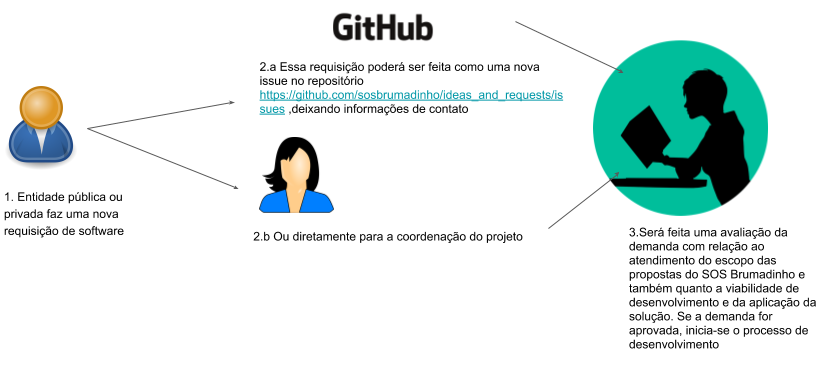
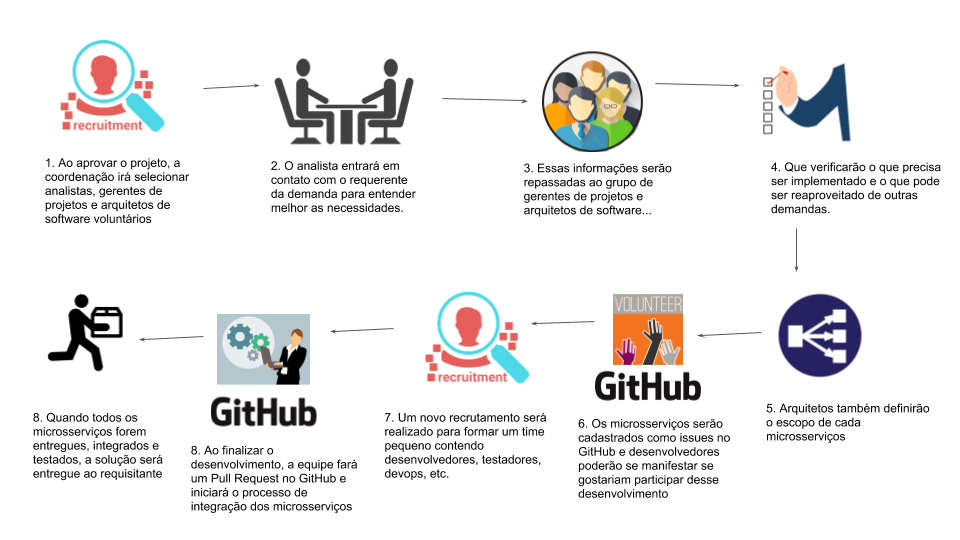
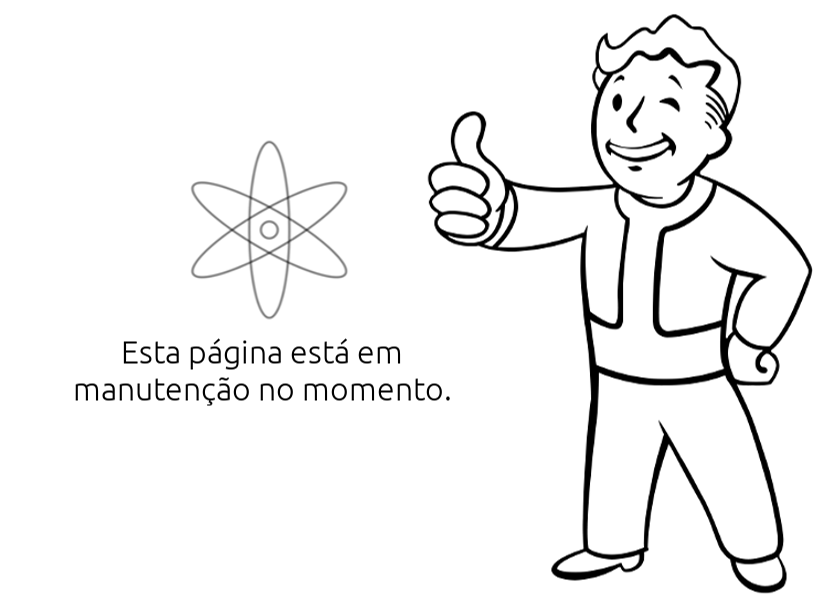

Sobre o projeto
Com o intuito de oferecer suporte às vítimas, comunidade e meio ambiente em razão do
rompimento da Barragem do Feijão em Brumadinho, foi montada a *Comunidade de voluntários digitais*,
chamada SOS Brumadinho. O projeto nasceu logo após a tragédia e já conta com diversas
ações de várias áreas do conhecimento.
O dev.sosbrumadinho, por exemplo, é um dos ramos do SOS Brumadinho e tem como objetivo apoiar o
desenvolvimento de soluções tecnológicas nesse contexto. A comunidade cresceu e agora
desenvolvemos e entregamos todo o tipo de software e aplicações tecnológicas que possam ajudar
pessoas e iniciativas em geral em Brumadinho.
Temos o apoio do grupo Open Innovation Brasil, da ABDI, de várias comunidades de TI, que se listarmos
aqui o texto não acabará ;), e de alunos da Universidade Federal de Juiz de Fora através do
programa de extensão “Minasdevtest - Desenvolvimento de softwares e aplicativos para a
comunidade”.
O grupo dev.sosbrumadinho pretende utilizar arquitetura de microsserviços, o que permitirá maior
flexibilidade no uso de diversas linguagens de programação por times. Por isso, todo o projeto
precisa ser muito bem arquitetado, é o que estamos fazendo agora! Vamos parar um pouquinho para
pensar no processo e na arquitetura para acelerar o desenvolvimento depois.
No momento, estamos precisando muito de especialistas com experiência na área de:
- Gerenciamento de Projetos
- Gerenciamento de Projetos Open Source
- Arquitetura de Software
- Arquitetura de Microsserviços
- Integração/Entrega contínua
- DevOps.
Se você possuir essas habilidades, entre no nosso grupo do
TELEGRAM e preencha
o formulário que disponibilizamos lá (ou, simplesmente, se apresente no grupo ;) ).
Mesmo que você não tenha essas habilidades, você pode ir acompanhando as nossas
discussões no nosso grupo do Telegram.
Caso tenha alguma ideia de projeto e quer que te apoiemos,
escreva o que você precisa em nosso REPOSITÓRIO,
deixando também suas informações para contato.
Agradecemos muito o apoio e a colaboração de toda a comunidade.
Por onde começar

Processo de desenvolvimento

Estaremos enviando os avisos de novas demandas e de requisição de profissionais
no nosso grupo no TELEGRAM.
Analistas, arquitetos e gerentes de projeto também podem acompanhar as novas solicitações
pelo GitHub e se candidatar
na própria issue.
Desenvolvedores de frontend e backend também podem acompanhar as demandas
específicas no grupo de desenvolvedores do TELEGRAM.
Cada microsserviço será cadastrado como uma nova issue no repositório específico do projeto
aceito e desenvolvedores também podem acompanhar esses repositórios.
Alunos voluntários da UFJF irão acompanhar as equipes para fazer o code review e
merge das soluções entregues. Eles também poderão auxiliar os voluntários que
tiverem dificuldades para “conteinerizar”, via Docker, os serviços implementados.
Ao se candidatar para o desenvolvimento de uma solução específica,
entraremos em contato e auxiliaremos na formação das equipes.
Projetos em andamento
O objetivo é desenvolver soluções computacionais que possam auxiliar qualquer demanda de curto, médio e longo prazo para auxílio das vítimas, comunidade e meio ambiente pelo rompimento da Barragem do Feijão em Brumadinho bem como auxiliar na prevenção em outros locais de barragens.
Caso você tenha alguma demanda, cadastre uma nova issue AQUI colocando suas informações para contato.
Os projetos que estão em desenvolvimento no momento são:
- Brumadinho_location: tem o objetivo de prever a localização de corpos ou segmentos corpóreos na área atingida pelo rompimento da barragem. Esse projeto conta com a participação de pesquisadores das melhores universidades brasileiras que estão propondo modelos para essa predição.
- Estou vivo!: aplicativo que tem como objetivo identificar e listar, por meio do cruzamento de várias bases de dados, as possíveis vítimas que foram atingidas pela tragédia, uma vez que se pode ter casos em que ninguém se manifestou em busca do corpo. Por meio do aplicativo, a população poderá informar a localização/contato da pessoa listada ou confirmar se ela está realmente desaparecida.
- Plataforma de colaboração: software que tem como objetivo compor uma rede de colaboração formada por pesquisadores e profissionais da indústria para resolver um determinado problema. Dado um determinado problema, por exemplo, detecção de mancha de maior concentração de corpos, a plataforma seria responsável por listar os profissionais que possuem as mais diversas habilidades necessárias para que o problema possa ser resolvido.
- Sistema para o Núcleo de Saúde e Apoio Psicológico: sistema de informação que tem como objetivo registrar as famílias, as graves violações de direitos humanos e os danos que estão sofrendo.
Como colaborar

Ações